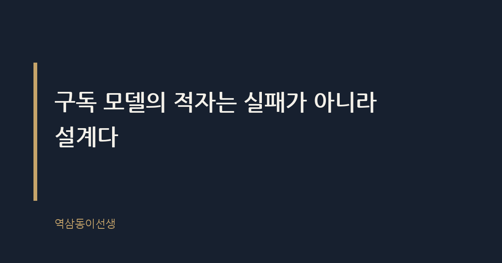
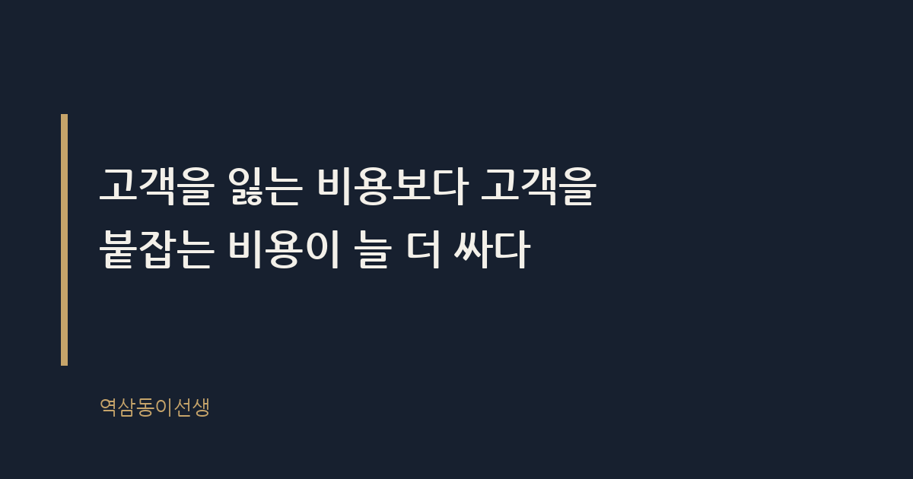

주제 구독 모델이 적자를 감수하는 계산 (evergreen / brand)
제목 후보
메타 설명 구독 모델이 적자를 감수하면서도 사업을 밀어붙이는 이유를 LTV, 락인 효과, 손익 구조로 분석한다.
라벨 구독모델, 구독경제, 브랜드전략, 쿠팡로켓와우, 넷플릭스, LTV전략, CAC분석, 락인효과, 구독서비스적자, 플랫폼전략, 신사업기획
실용 자산 계산·기준 표 — 구독 모델 적자 감수 구조를 CAC·LTV·손익분기 개념으로 비교 설명해야 독자가 '왜 버티는지'를 수치 없이도 구조적으로 이해할 수 있다
발행 전 팩트체크
이미지 (Blogger 편집기에 드래그해 넣으세요)
도입부 사진 · ⓒ Pexels / Pexels


지난달 써니 넷플릭스 계정에 가격 인상 메일이 왔다. 한 달에 몇천 원 올랐을 뿐인데 해지 버튼까지 눌렀다가, 결국 다시 뒤로 가기를 눌렀다. 이유를 생각해보니 별게 아니었다. 보던 시리즈가 중간이었고, 프로필이 이미 네 개나 세팅돼 있었고, 다른 서비스로 옮기는 게 더 귀찮았다. 해지하려다 안 한 것뿐인데, 그 순간 넷플릭스는 이번 달 매출을 하나 지킨 셈이다.
구독 모델이 적자를 감수하는 이유는 바로 이 장면 안에 있다. 당장 손해를 보더라도 고객을 붙잡아두는 비용이, 나중에 새 고객을 다시 데려오는 비용보다 훨씬 싸다는 계산 때문이다. 적자는 실수가 아니라 처음부터 설계된 손익이다.
구독 모델이란 고객이 한 번 결제하고 끝나는 게 아니라, 매달 혹은 매년 반복 결제하며 서비스를 계속 이용하게 만드는 수익 구조다. 넷플릭스, 쿠팡 로켓와우, 멜론, 각종 OTT와 배송 멤버십이 모두 여기 속한다. 핵심은 '한 번의 판매'가 아니라 '관계의 지속'을 파는 데 있다.
전통적인 소매업은 물건을 팔 때마다 이익을 남긴다. 반면 구독 모델은 가입 초기엔 거의 예외 없이 손해를 본다. 물류 투자, 콘텐츠 제작비, 가입 혜택, 마케팅 비용이 한꺼번에 들어가기 때문이다. 그런데도 기업들은 이 적자를 몇 년씩 버틴다. 왜 그럴까.
국내로 눈을 돌리면 그림이 더 또렷해진다. 네이버플러스 멤버십, 배달의민족 배민클럽, 쿠팡 와우 모두 적자 구간을 지나며 몸집을 키웠다. 이 서비스들은 포인트 적립, 무료배송, OTT 연동 같은 혜택을 묶어 '한 번 가입하면 빠져나가기 아까운' 구조를 만든다. 혜택 하나하나는 몇천 원짜리지만, 묶어놓으면 해지할 때 포기해야 할 게 너무 많아진다. 이게 바로 번들링(bundling)이라는 전략이고, 구독 모델 적자 설계의 또 다른 축이다.
쿠팡 로켓와우는 멤버십 서비스 초기 수년간 대규모 영업손실을 기록한 것으로 알려졌다. 넷플릭스도 콘텐츠 투자에 막대한 돈을 쏟아부으며 오랜 기간 적자 구간을 지나왔다는 게 업계에 널리 알려진 이야기다. 둘 다 상장 초기에 투자자들로부터 '언제 흑자 전환하느냐'는 질문을 수없이 받았다.
이들이 적자를 감수하면서도 사업을 이어간 데는 뚜렷한 배경이 있었다. 구독자 한 명을 데려오는 비용(CAC, 고객획득비용)보다, 이미 가입한 고객이 평생 지불할 돈(LTV, 고객생애가치)이 훨씬 크다고 판단했기 때문이다. 처음 몇 년은 CAC가 LTV를 넘어서서 적자가 나지만, 가입자 수가 쌓이고 이탈률이 낮아지면 어느 순간 손익분기점을 넘는다. 회사는 그 지점을 미리 계산하고 적자를 '투자'로 분류한다.
아마존 프라임도 비슷한 길을 걸었다. 초기엔 배송비를 회사가 떠안으면서 물류센터 투자에 막대한 돈을 쏟아부었다는 게 업계에 알려진 사실이다. 제프 베조스는 주주서한에서 프라임 회원이 그렇지 않은 고객보다 훨씬 더 자주, 더 많이 구매한다는 취지의 언급을 반복했다. 적자를 감수하는 명분은 결국 하나로 모인다. 지금 돈을 잃더라도 고객의 소비 습관 자체를 우리 플랫폼에 고정시키겠다는 것이다.
회의실에서 신사업 기획안을 검토할 때 가장 많이 나오는 표가 바로 이 구조다. 숫자는 회사마다 다르지만, 틀은 거의 똑같다.
| 구분 | 초기 단계 | 성숙 단계 |
|---|---|---|
| 고객획득비용(CAC) | 마케팅·혜택 비용 집중 투입, LTV보다 높음 | 입소문·재가입 비중 늘어 점진적 하락 |
| 고객생애가치(LTV) | 가입 기간 짧아 불확실 | 장기 구독자 누적으로 예측 가능해짐 |
| 손익 구조 | 영업적자, 투자금으로 메움 | 규모의 경제로 흑자 전환 시도 |
| 핵심 지표 | 가입자 증가율, 이탈률 | 재구독률, 객단가 상승 |
이 표에서 가장 중요한 줄은 '이탈률'이다. 이탈률이 낮으면 LTV는 자연히 올라간다. 그래서 구독 서비스들이 해지 버튼을 일부러 복잡한 메뉴 안쪽에 숨겨두고, 해지 직전에 할인 쿠폰을 띄우는 것이다. 써니가 넷플릭스를 해지하려다 멈춘 그 순간이, 바로 이 표의 '이탈률'이라는 숫자 하나를 지켜낸 사건이다.
구독 모델의 적자 계산이 정교해질수록, 해지를 막는 화면 설계도 정교해진다. 가입은 버튼 한 번이면 끝나지만 해지는 전화를 걸거나 상담원과 대화를 거쳐야 하는 경우가 많다. 미국 연방거래위원회(FTC)가 가입만큼 쉽게 해지할 수 있도록 하는 '클릭 투 캔슬(click-to-cancel)' 규정을 추진한 것으로 알려졌는데, 이 자체가 역설적으로 그동안 업계 관행이 어땠는지를 보여준다.
써니의 넷플릭스 화면도 비슷했다. 해지 버튼을 누르자마자 '정말 떠나시겠어요?'라는 문구와 함께 할인 혜택이 떴다. 이 설계는 우연이 아니다. 이탈 직전 고객에게 할인을 제시하는 건 CAC보다 훨씬 싼 비용으로 LTV를 지키는 방법이기 때문이다. 신규 고객 한 명을 데려오는 데 드는 마케팅비보다, 이미 있는 고객에게 할인 쿠폰 하나 던져주는 비용이 압도적으로 싸다. 회사 입장에서는 당연한 계산이다.
구독 모델이 노리는 진짜 자산은 콘텐츠도 물류망도 아니다. 고객이 갈아타기 귀찮아하는 마음, 즉 전환비용이다. 프로필 설정, 저장된 결제수단, 쌓인 시청 기록, 적립된 포인트 — 이 모든 게 '락인(lock-in)'을 만든다. 락인이 강할수록 회사는 가격을 올려도 이탈이 적다는 걸 안다. 그래서 적자를 감수하고라도 초반에 이 락인부터 심어둔다.
예전에 모 신사업팀 회의에서 "적자가 2년째인데 왜 계속 투자하냐"는 질문이 나온 적이 있다. 담당 임원은 이렇게 답했다. "지금 나가는 돈은 손실이 아니라 고객 한 명을 우리 생태계 안에 붙잡아두는 비용이다. 이걸 지금 안 쓰면 나중에 경쟁사가 먼저 붙잡는다." 그 말에 회의실 분위기가 바뀌었던 기억이 난다. 적자를 보는 눈이 '비용'에서 '선점'으로 바뀌는 순간이었다.
집에서도 이 락인을 체감할 때가 있다. 가족 구독 목록을 정리하려고 신용카드 명세서를 쭉 펼쳐본 적이 있는데, 자동결제로 빠져나가는 항목이 여덟 개가 넘었다. 가격이 올라도, 콘텐츠가 뜸해져도 쉽게 정리하지 못한 데는 그만한 사정이 있었다. 어디서 뭘 보던 중이었는지, 어떤 혜택을 포기해야 하는지 일일이 따지는 게 귀찮았다. 이 귀찮음이야말로 회사가 가장 공들여 설계한 자산이다.
요즘은 '구독 피로(subscription fatigue)'라는 말이 흔하다. 넷플릭스, 디즈니플러스, 티빙, 쿠팡플레이까지 구독료를 다 더하면 웬만한 통신비를 넘는다는 불만이 여기저기서 나온다. 그런데도 회사들은 신규 혜택을 추가하고 적자 폭을 키우는 투자를 멈추지 않는다. 거기엔 분명한 사정이 있었다. 경쟁사가 먼저 치고 나가면 되돌릴 방법이 없기 때문이다.
한 번 다른 플랫폼으로 옮겨간 고객을 다시 데려오는 비용은, 처음에 붙잡아두는 비용보다 훨씬 크다. 그래서 구독 피로가 쌓이는 걸 알면서도, 회사들은 오히려 이 시기에 더 공격적으로 혜택을 확장한다. 고객이 지쳐서 구독 목록을 정리에 나설 때, 자기 서비스만큼은 정리 대상에서 빠지게 만들어야 하기 때문이다. 결국 적자는 여전히 '선점 비용'으로 계산된다.
구독 모델이 전부 성공하지 못하는 이유는 적자를 버틸 체력과 시점 계산이 다르기 때문이다. 어떤 회사는 CAC가 LTV를 역전하는 시점을 정확히 예측하고 자금을 운용하지만, 어떤 회사는 '일단 가입자부터 모으자'는 식으로 뛰어들었다가 자금이 먼저 바닥난다. 실제로 많은 구독형 스타트업이 가입자 수는 늘렸지만 손익분기점에 도달하기 전에 투자금이 끊겨 서비스를 축소하거나 접은 사례가 있었던 것으로 알려졌다.
결국 구독 모델의 성패는 콘텐츠나 서비스 품질 이전에, '얼마나 오래 적자를 버틸 수 있는가'를 정확히 계산했느냐에 달려 있다. 이 계산이 틀리면 아무리 좋은 서비스도 중간에 멈춘다.
적자 예산안이 승인되는 회의실은 생각보다 조용하다. 숫자로만 보면 당연히 반려돼야 할 안건이 통과되는 이유는, 발표자가 '몇 년 뒤 몇 명의 재구독 고객'이라는 그림을 설득력 있게 그려냈기 때문이다. 반대로 아무리 혜택이 화려해도 이탈률 곡선을 보여주지 못하면 예산은 바로 깎인다. 결국 구독 모델의 적자는 감정이 아니라 숫자로 설득되는 영역이다.
씁쓸하면서도 꽤 인상적인 건, 그 설득의 대상이 결국 나 같은 소비자라는 사실이다. 내가 귀찮아서 해지 버튼을 안 누르는 그 순간이, 누군가의 회의실에서 예산 승인의 근거가 된 숫자 하나로 돌아간다.
Q. 가격이 올랐는데도 귀찮아서 구독 해지를 못 한 경험, 저만 있는 건 아니죠?